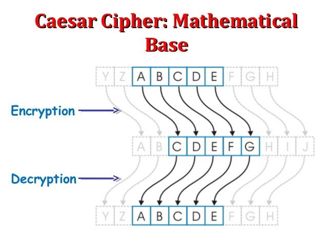

Sobre a Cifra de César
A cifra de César é uma das mais simples e conhecidas técnicas de criptografia. É um tipo de cifra de substituição na qual cada letra do texto é substituída por outra, que se apresenta no alfabeto abaixo dela um número fixo de vezes. Por exemplo, com uma troca de três posições, A seria substituído por D, B se tornaria E, e assim por diante. O nome do método é em homenagem a Júlio César, que o usou para se comunicar com os seus generais. É claro, não necessariamente devemos seguir esta ordem de substituição das letras, mas podemos usar a lógica da cifra e trabalhar da maneira que quisermos no desenvolver da aplicação.
